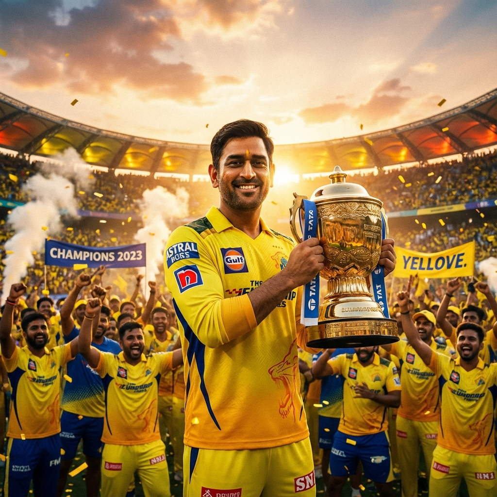

December 15, 2025
The Dhoni Era: A Legacy of Leadership
From the first ball in 2008 to the triumphant return in 2024, explore how MS Dhoni transformed Chennai Super Kings into the most consistent franchise in IPL history. A deep dive into the captain's tactical genius, unshakeable composure under pressure, and his unique ability to mentor young players while maintaining team chemistry.
Read Full Article →